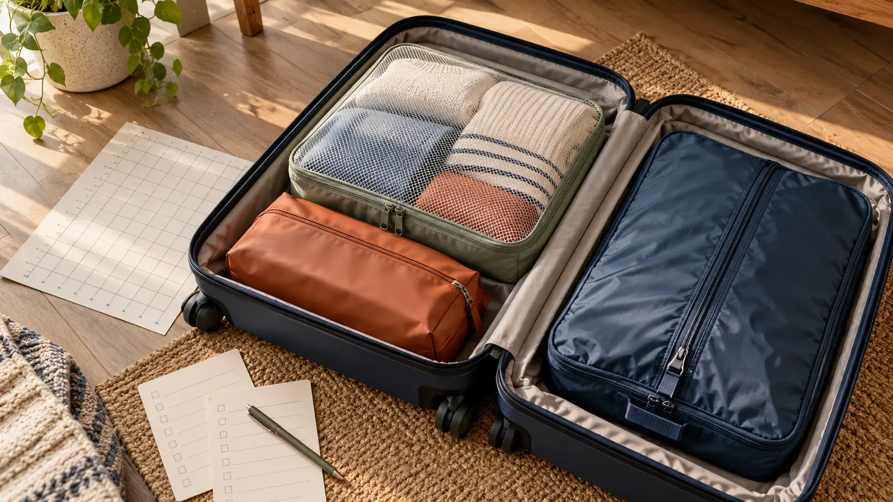

Breathable mesh cube
Best for: ordinary dry clothing that benefits from visibility. Tradeoff: mesh can snag and does not isolate leaks, odors or damp items.
TRAVEL ORGANIZATION · NO-BUY-FIRST · AUTHORITY-EXPANSION
Cubes organize; they do not create payload. Start with the suitcase you own, assign one job per container, and reject any system that makes the bag heavier or harder to inspect.

Packing cubes are useful when they reduce searching and contain categories. They are useless when a family buys twelve pieces, fills every one, and creates a heavier puzzle. A cube does not make an airline weight limit disappear. Compression moves fabric into a smaller shape; it does not remove mass and can make a dense bag easier to overweight.
Before buying anything, run the bag-fit test with containers already at home: clean reusable zip bags, existing toiletry pouches, cloth drawstring bags or small boxes used only as temporary size stand-ins. Pack the real trip list into the real luggage. If three labeled zones solve the problem, stop. If the stand-ins snag, hide items or leave unusable gaps, record the needed dimensions before shopping. This page organizes inside a bag; it does not replace the separate rolling carry-on, duffel and backpack guide.
A mesh-top cube lets an adult see whether shirts or socks are still inside and lets dampness escape more readily than a sealed pouch. It suits dry everyday clothing, especially when one color or label corresponds to one person. The tradeoffs are exposed privacy, possible zipper or mesh snags, limited spill containment and a tendency to overfill the visible space.
Check the mesh opening, zipper path, seam finish, usable interior dimensions, empty weight, wash instructions and replacement or warranty route. Pull the zipper with the cube loaded but not compressed. If fabric must be stuffed away from the teeth every time, the cube or load is wrong. Never assume “ripstop” makes the entire item tear-proof.
An opaque pouch is better for underwear, period supplies, small sensory tools, charging cables or a private change-of-clothes category. Children can use a simple symbol or color rather than a public name. Adults should still know what is inside before security screening, and nobody should pack prohibited or undeclared items just because a pouch hides them.
“Wipe-clean,” “water resistant” and “waterproof” are different claims. Verify the exact material and closure statement from the manufacturer. Most ordinary zippers are not submersible barriers. Liquids still follow the carrier’s current rules and should be packed in the required transparent container when applicable. Wet swimsuits need a deliberate isolation and drying plan; do not seal moisture for days and call it organized.
A zip-compression cube can reduce the bulk of fleece, pajamas or other soft items by pulling an expansion gusset closed. It may help a bag close more neatly, but it adds hardware and makes the contents denser. Dense cubes can distort a soft bag, stress seams, create hard corners against a traveler’s back and push an otherwise acceptable bag over a carrier’s weight limit.
Load below the primary zipper, close the main compartment, then work the compression zipper gradually around the perimeter according to the exact instructions. Stop when fabric catches, the zipper teeth separate, the bag bows or unusual force is required. Do not compress fragile objects, devices, batteries, medication, shoes or anything whose maker warns against pressure. Vacuum bags are a different system and can leave a family unable to reproduce the pack for the return trip.
Start with a shared architecture: one clothing cube per traveler only when the bag and trip justify it, one adult-managed hygiene/liquid system, one arrival pouch, and one empty dirty-clothes solution. A child can own the job of checking a color or symbol, but an adult verifies medication, documents, chargers and anything with travel restrictions.
For a road trip, categories may work better than people: everyone’s sleepwear in one cube, cold-weather layers in another, and a first-night pouch kept outside the deep trunk stack. For airline travel, individual cubes can make repacking easier during inspection, but the traveler must still follow Transportation Security Administration and carrier rules. The family hotel-room system gives each container a landing place after arrival.
Use an icon, color patch or number visible only enough for the family to distinguish containers. Avoid a child’s full name, birth date, school, team, home address or full itinerary. Put adult contact information on the luggage tag according to the family’s privacy preference and carrier requirements, not on every cube.
Give each child one finite check: choose tomorrow’s shirt, return socks to the blue cube, or place the empty pouch on the dresser. Do not make children responsible for controlled medication, passports, money, batteries or the final bag closure. A system works when another adult can understand it under time pressure, not when it depends on a perfect memory.
Measure the fully loaded bag. Airline and rail limits are set by the actual carrier and fare, and they can differ by route, aircraft or service. Check the official policy before each trip. Security rules also change; use the official TSA “What Can I Bring?” and liquids guidance for U.S. screening. A packing cube is not an exception to inspection, battery, sharp-object or liquid rules.
In a car, keep emergency gear and the items needed during a stop accessible rather than buried under tidy cubes. Do not place hard, heavy pouches loose in the passenger compartment. At a hotel, keep the exit route clear and do not let organizers block heating equipment, doors or sprinklers. The hotel fire-escape plan owns that safety job.
Decide before leaving whether worn clothing returns in a dedicated washable sack, an empty cube or a simple bag. Separate damp items and follow fabric care; do not trap a wet swimsuit or muddy sock with clean clothing for the whole trip. On arrival home, empty every container, check corners, air or wash according to the maker, inspect zippers and store cubes open and dry.
Do not spray fragrance to disguise a moisture problem. If a spill involved a medication, bodily fluid, allergen or unknown substance, the responsible adult follows the product, fabric and health guidance rather than improvising. The care-label lesson is a safe next step for older kids.
The paid cards below compare broad categories only: mesh packing cubes, wipe-clean travel pouches and compression packing cubes. No item was purchased, used, measured or durability-tested for this article. Compare exact external and usable dimensions, empty weight, materials, zipper design, seams, care instructions, water-resistance wording, warranty, return policy and current recalls. Verify every claim on the manufacturer’s own page or manual.
Buy the smallest set that maps to the measured bag-fit gap. Who should choose mesh? Families that value visual inventory and pack dry clothing. Who should choose opaque pouches? Families needing privacy or contained small-item categories. Who should choose compression? Travelers with bulky soft layers who already pass the weight test and can close the system without force. Who should buy none? Anyone whose existing pouches already produce a stable, accessible bag.
Low energy: use one existing pouch for first-night items and leave the rest loose but folded. Leaving tomorrow: do not order a complex system you cannot test; use three clean stand-ins, weigh the actual bag and save the shopping decision for after the trip. Child resists: let the child pick one icon or color, then the adult packs. Return trip: use the same categories even if folding is imperfect; getting every necessary item home matters more than a photo-ready suitcase.
Skip packing cubes when the luggage’s built-in compartments already work, the trip is one night, the added empty weight matters, a backpack needs soft adaptable loading, or the traveler cannot reproduce the compressed pack. Also skip any organizer that obscures a required inspection, creates inaccessible medication storage or encourages more items than the traveler can carry.
Reviewed October 27, 2026 using the U.S. Transportation Security Administration’s official What Can I Bring? directory and reminder that travelers must follow current screening rules, while carrier size and weight limits must be checked with the actual carrier. The job matrix and eight-step bag-fit test are original editorial tools, not hands-on product testing or a promise of carrier acceptance. Paid links use the site’s existing approved affiliate configuration. Report corrections through About.
MAKE THE WEEK COUNT
Build the plan your family can finish well, then leave enough energy for the next part of the day.
More family plansTHE USEFUL STUFF
These are practical categories to compare—not a reason to overpack. Check fit, specifications and current reviews before buying.
Paid links: As an Amazon Associate I earn from qualifying purchases. You pay no additional cost.
Compare loaded dimensions, empty weight, mesh and seam construction, zipper path, care instructions, warranty and return terms; visibility does not provide spill protection.
See current options → COMPARE ON AMAZONVerify usable dimensions, material, closure, cleanability and the maker's exact water-resistance claim; an ordinary zipper is not a waterproof seal.
See current options → COMPARE ON AMAZONCheck loaded size, empty weight, zipper and gusset design, care, warranty and the real bag-weight result; compression changes volume, not mass.
See current options →